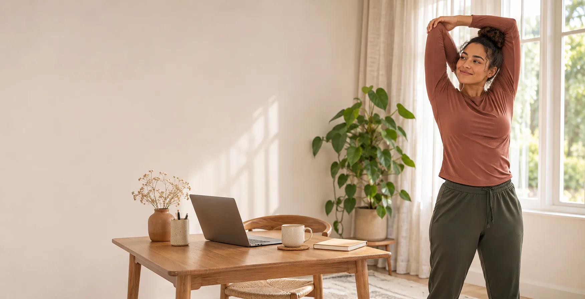

{{ post.data.title }}
{{ post.data.summary }}

Movement for real life
Clear, unhurried guidance for people who want to move more at home—without turning the day upside down.
AI-created editorial illustration for HAVAN.
Start where you are
There is no single routine that fits every body or schedule. Choose the situation that sounds most like today, then use the guide as a starting point—not a prescription.
A simple pause between meetings, with options to stay seated or stand.
Take a movement break →02Too many free videos? Use three questions to narrow the field.
Choose a starting point →03A practical checklist for format, fit, price and refund terms.
Use the buyer’s checklist →Curated movement library
Nine free routines, arranged by the time, space and starting point you have today. Every selection includes HAVAN’s editorial notes, so you can choose before pressing play.
Explore the libraryFrom the journal
Short reads designed to help you make a calm, informed next choice.
{{ post.data.summary }}
Program guide
Our overview separates the provider’s claims from what HAVAN has—and has not—independently verified.
Read the program overviewA gentle boundary
HAVAN shares general educational content. Stop if movement causes pain or concerning symptoms, and seek guidance from a qualified healthcare professional when appropriate.